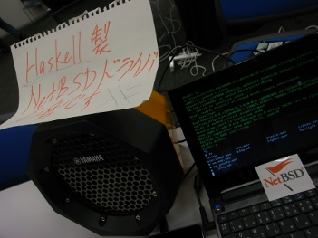
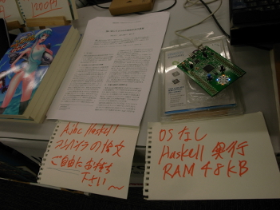

Metasepi作戦会議 第13回を オープンソースカンファレンス2014 Tokyo/Spring で開催したでゲソ。 今回はNetBSDのサウンドドライバをAjhcコンパイラとHaskell言語で設計置換する話をしてみたでゲソ。 また、Metasepiプロジェクトの最初のイテレーションである Arafura が終わったので、イテレーションの振り返りと次のイテレーションへの展望をざっくざっくとまとめたでゲッソ。
今回のデモはNetBSD kernelのHD Audioドライバの割り込みハンドラだけをHaskell化してみて、 実際に音源を再生するものでゲソ。 AjhcにおけるHaskellヒープアロケータであるs_alloc()関数が断続的に呼び出されていることがデモからわかるでゲソ。 ヒープアロケーションは頻繁に行なっているのでゲソが、GCはほとんど発生していないじゃなイカ。 これはどうことなのでゲソ？ Ajhcはコンテキスト単位に分割してHaskellヒープを管理しているでゲソ。 つまりHD Audioからのハードウェア割り込みが発生すると、 バージンなHaskellヒープがハードウェア割り込みに対応するHaskellコンテキストに割り当てられるでゲソ。 割り込み処理はあまり負荷なく終了するためHaskellヒープはあまり使われないまま、当該コンテキストは終了するでゲソ。 この割り込みHaskellコンテキストが終了するタイミングで、 汚れたHaskellヒープはバージンな状態になってヒーププールに戻されるのでゲソ。 ということは次のハードウェア割り込みの時にはまたバージンなHaskellヒープがいつも取り出せるということじゃなイカ! このAjhcの“コンテキストローカルヒープ”によってNetBSD kernel中のGCの発生頻度は極端に抑えられるのでゲソ。
さて、 以前にも説明した 通りArafuraイテレーションは終わろうとしているでゲソ。 次のイテレーションでのkernelデザインは
「NetBSD kernelをATSコンパイラを用いてスナッチ設計する」
となる予定でゲソ。 この新しいイテレーションの名前を Bohai と名付けることにしようと思うでゲソ。 Bohai(渤海)は中国は北京に近い内海なのでゲソが、今は海洋汚染がすすんでいると聞くでゲソ。 さっそく型の力できれいな海を取り戻そうじゃなイカ! そしてもちろんBohaiはATSの作者である Hongwei の故郷でゲソー。
https://github.com/metasepi/netbsd-arafura-s1
 
blog comments powered by